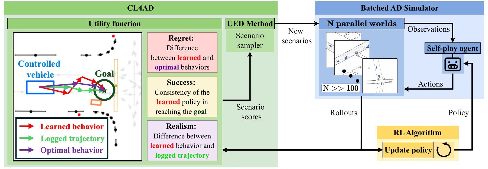
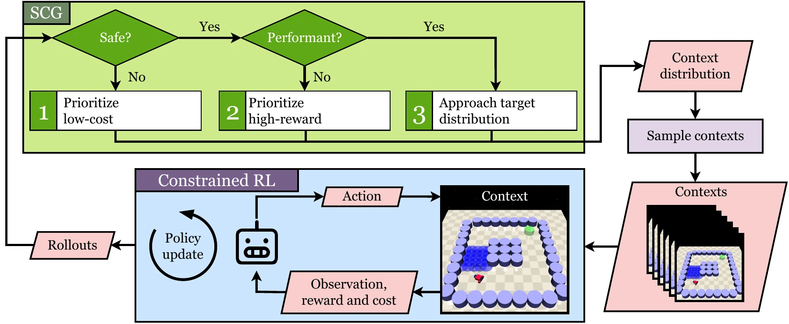
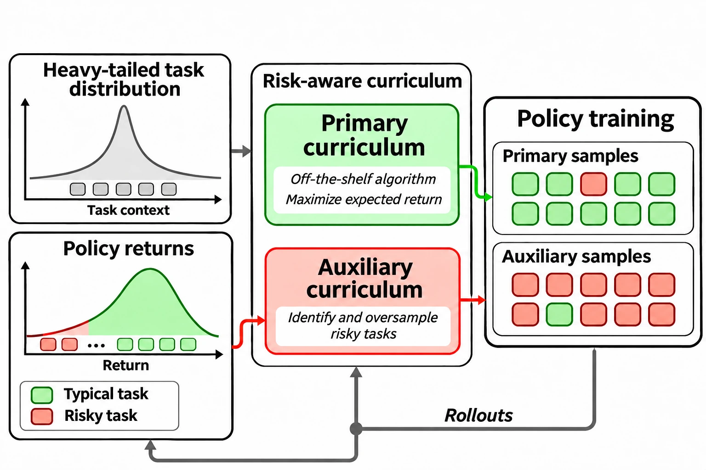
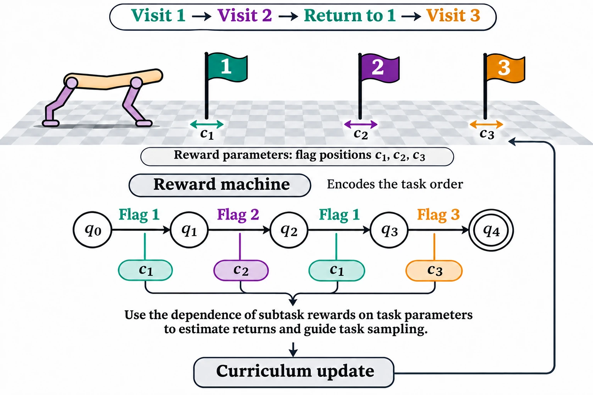
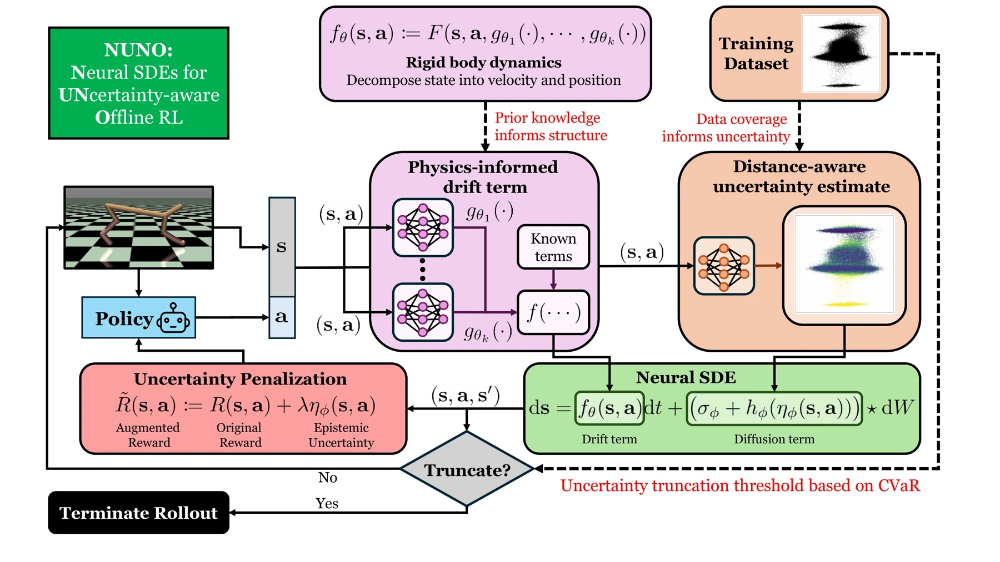
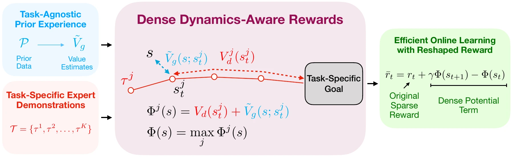

Waymo
2026Software Engineering Intern · Planner team
Post-training the onboard planner foundation model to unlearn undesirable driving behaviors, using preference learning within Waymo’s training infrastructure.
Python · JAX · SQL
I’m a final-year PhD student in Electrical and Computer Engineering at UT Austin, advised by Ufuk Topcu.
I received my B.Sc. in Electrical and Electronics Engineering from Bilkent University, where I worked with Yildiray Yildiz.
My PhD research focuses on improving the sample efficiency of reinforcement learning through automated curriculum generation and reward synthesis.
My industry research spans foundation-model post-training, preference learning, multi-agent self-play, and teacher–student knowledge distillation.
Graduating May 2027 · Seeking research scientist and research engineer roles
Software Engineering Intern · Planner team
Post-training the onboard planner foundation model to unlearn undesirable driving behaviors, using preference learning within Waymo’s training infrastructure.
Python · JAX · SQL
Research Intern
Developed CL4AD to scale curriculum learning to thousands of concurrent self-play agents in GPUDrive.
Python · PyTorch
Research Intern
Developed Gen2Spec: teacher–student knowledge distillation through action advice from a generalist meta-RL agent to accelerate specialist training.
Python · PyTorch · Ray
Selected work
Reinforcement learning can waste interactions on uninformative tasks, struggle with sparse rewards, or exploit errors in learned dynamics. My work addresses these limitations through adaptive task selection and reward synthesis, using task structure, prior experience, demonstrations, and physics knowledge to improve sample efficiency.

Uniform scenario sampling wastes compute on driving situations that contribute little to learning. CL4AD scales adaptive curricula to thousands of concurrent self-play agents in GPUDrive, prioritizing scenarios using learning progress, safety, and behavioral realism. It reduced wall-clock time to 99% success by 77% compared with uniform sampling and scaled to 80,000 real-world traffic scenarios.

Curricula that select tasks for reward improvement can undermine safety during training. SCG prioritizes safety before reward, using constrained optimal transport to expand task coverage subject to safety and performance thresholds. It reduced training-time constraint violations without sacrificing final performance across three constrained RL domains.

Standard curricula can overlook rare, risky tasks under heavy-tailed task distributions. RACGEN augments an off-the-shelf curriculum with an auxiliary curriculum that identifies challenging tasks from their returns and oversamples them during training. This improves both expected return and performance on challenging tail events.

Standard curricula overlook the subtask structure of long-horizon tasks. The method encodes task order with a reward machine, then uses the dependence of subtask rewards on task parameters to estimate returns and guide task sampling. It solves tasks where standard curricula failed and produces more stable curricula by reducing unnecessary exploration of the task-configuration space.

Offline RL policies can exploit errors in learned dynamics, achieving optimistic simulated returns that fail in the real environment. NUNO learns physics-informed dynamics with neural stochastic differential equations and uses distance-aware uncertainty to penalize rewards and truncate unreliable rollouts. It improved performance by up to 93% over prior offline RL methods on low-quality D4RL and NeoRL MuJoCo datasets.

Sparse rewards make it difficult to explore beyond a few demonstrated trajectories. This framework combines task-agnostic prior experience with demonstrations to synthesize dense, dynamics-aware rewards that guide exploration around those trajectories. It accelerates policy learning in robot manipulation even when the demonstrations are suboptimal.
* Equal contribution. Select any figure to view it at full size.
Agents trained through self-play can overfit to the behaviors of their training partners and struggle against unfamiliar traffic. I’m investigating curriculum-guided scenario generation that composes diverse driving behaviors, exposing agents to a broader range of interactions to improve behavior generalization.
LLM unlearning can remove targeted knowledge at the cost of capabilities that should be retained. This work investigates whether adapting the sequence and difficulty of unlearning tasks during RL post-training can improve targeted forgetting while preserving unrelated capabilities.
PhD in Electrical and Computer Engineering
UT Austin · Expected May 2027
B.Sc. in Electrical and Electronics Engineering
Bilkent University · 2021
Organizer of the UT Austin Reinforcement Learning Reading Group since August 2025.
Reviewer for NeurIPS, ICML, ICLR, AAAI, AISTATS, and TMLR.